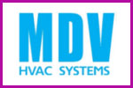

Преимущества брендов
 |
Кондиционеры Fujitsu GeneralПрайсУже более 15 лет в России знакомы с продукцией компании Fujitsu General. Это климатическая техника высочайшего класса - сплит-системы, кондиционеры, которые, между прочим, на их родине в Японии называют "первыми среди лучших". Что уж кривить душой - каждый покупатель хочет получить качественный товар, выбирая кондиционер Fujitsu General вы не ошибетесь с выбором, ведь это не просто "раскрученный брэнд", это настоящее японское качество, современные технологии, строжайший контроль - недаром специалисты относят климатическую технику производства Fujitsu General к оборудованию премиум класса. |
 |
Кондиционеры Mitsubishi HeavyПрайсГлавное техническое управление Mitsubishi Heavy Industries, Ltd. - это сердце мощной системы научных исследований и опытно-конструкторских разработок корпорации. В него входят Центр передовых научно-технических исследований и пять научно-исследовательских центров, находящихся на каждом из ключевых предприятий. Деятельность Центра передовых научно-технических исследований сосредоточена на новейших разработках и технологиях будущего, научно-исследовательские центры в Нагасаки, Такасаго, Хиросиме, Иокогаме и Нагоя занимаются НИОКР (научно-исследовательские и опытно-конструкторские работы), которые тесно связаны с конкретными технологиями и потребностями предприятий. |
 |
Кондиционеры Mitsubishi ElectricПрайсВысочайшее качество продукции Mitsubishi Electric само является ее рекламой. Однако когда промышленные технологии и стандарты с легкостью меняют корпоративную прописку в глобальном масштабе, минимальный уровень брака перестает быть конкурентным преимуществом, превращаясь в условия выживания на рынке. |
Кондиционеры HyundaiПрайсУ себя на родине в Корее кондиционеры HYUNDAI являются неизменным фаворитом рынка, и дело тут не только в патриотизме. |
Кондиционеры DaikinПрайсDAIKIN - это непревзойденное качество, высокие технологии в области производства климатических систем, это "модные" кондиционеры, постоянные исследования и внедрение новейших разработок. Для рядового потребителя наверняка будет интересно узнать, что компания DAIKIN производит не только климатическую технику (фанкойлы, кондиционеры, мульти сплит-системы, а также хладагенты), но и высокотехнологичные цифровые и электронные устройства, которые применяют в авиационной, атомной и даже космической отрасли! |
|  | Кондиционеры MDVПрайсВ России торговая марка MDV была зарегистрирована GD Midea Holding Co., Ltd. в 2001 году. В течение длительного времени производитель искал надежного партнера на Российском рынке для совместного продвижения китайского бренда Premium класса, которым в полном смысле этого слова является MDV. Особенность бренда MDV заключается в использовании новейших технологий при производстве всей номенклатурной линейки, широком использовании технологии инверторного управления компрессором, применении исключительно озонобезопасных хладагентов R-410А и высочайшем уровне качества. |